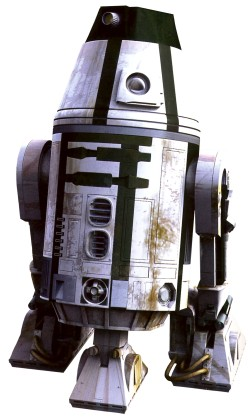
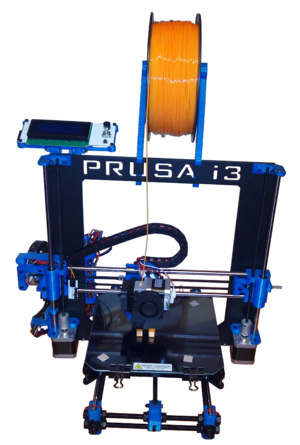
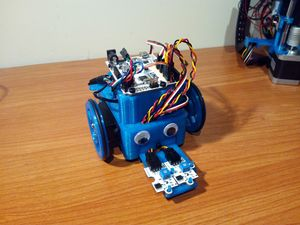
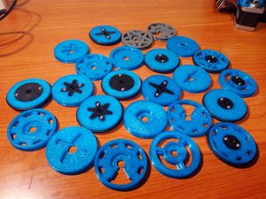
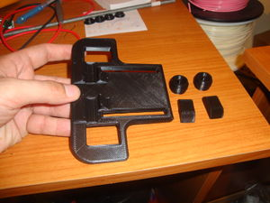
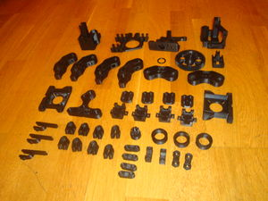
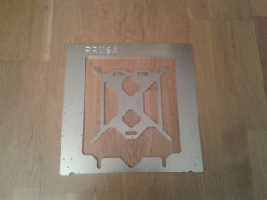
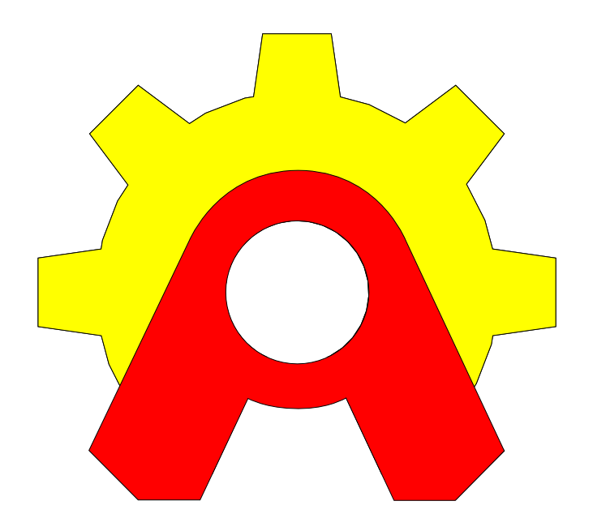

Contenido
[ocultar]Introducción
R4i3 es el clon #190, hija de R3, nieta de R2D2 y bisnieta de R1. Es hermana de R2-Reloaded, la mítica Prusa i2 de los video-tutoriales ;-)
Características
- Electrónica: Ramps 1.4, con panel LCD. Donado por Menextex. Enlace al kit ramps Enlace al kit LCD
- Marco original de Prusa. Comprado en reprapsource.
- Kit de varillas de Sergio García (Xherry)
- Motores, rodamientos, correas y base caliente de Leapto3D
- Extrusor: Budas Gallego que le compré a Fidel Fraga
- Fuente de alimentación: Comprada en Reclone3D
- Extrusor Jonas modificado para Prusa i3 por Miguel Sanchez (Misan)
- Instrucciones de montaje: me he basado en la wiki de Diego Viejo, en sus fotos y en el plano en Openscad. También he usado muchas de las fotos que habéis mandado a la lista. Ver en directo la Prusa i3 de Luis Macías también me fue muy útil. Gracias a todos :-)
Méritos
| Primera Prusa i3 ROSA :-P |

Ficha
 |
 |

Autores
- Juan González Gómez (Obijuan)
- Andrés Prieto-Moreno
Descargas
Fotos
| Álbum de fotos en google+ |
|---|
Tareas
-
Comprar marco Prusa i3 - Comprar Prusa nozzle
-
Imprimir piezas i3 -
Conseguir resto de material - Pasar a Slic3r
- Ajustar Marlin y publicar configuración
-
Pieza para ventilador -
Conector para ventilador -
Re-organizar cables
Historia
- 14/Oct/2014: R4i3 asciende a la categoría de Consejero Jedi. Ha parido a R5

(click para ampliar)

- 05/Oct/2014: Impresión y montaje del printbot Renacuajo (Para validar las piezas diseñadas en Freecad)

(click para ampliar)

- 27/Sep/2014: Se terminan de imprimir TODAS las ruedas de la Biblioteca printbots, para comprobar que todos los modelos están ok y que funcionan

(click para ampliar)

- 12/Sep/2014: Se imprime juego de piezas para construir una nueva impresora: R5, que será una Prusa Hephestos
- 18/Abril/2013:
- Donación de piezas a Juan Solo
- Impresión de piezas para el robot de Juan Herrero. A través de Jesus Arroyo.

(click para ampliar)


- 17/Abril/2013: R4i3 asciende a Jedi Master. Impreso un juego de piezas de la Prusa i2 para Juan Ramos (Juan Solo)

(click para ampliar)

- 13/Abril/2013: Nacimiento de R4i3. Imprime su primera pieza: una ficha de casino :-)
- 22/Enero/2013: Recibido el Marco de la Prusa i3 (comprado en ReprapSource)

(click para ampliar)

- 11/Enero/2013: Comprado el marco de la Prusa i3 en reprapsource, junto con 4 rodamientos lineales LME8UU. Total pagado: 103€
Enlaces
- Impresora R1 (Generación 0)
- Impresora R2D2 (Generación 1)
- Impresora R3 (Generación 2)
- Impresora R2-Reloaded (Generación 3)
- Prusa i3 single frame en Clone Wars
|
|
Proyecto Clone wars: Construye tu impresora 3D opensource! |
|
 |
Obijuan Academy, Tu academia rebelde! ;-) |